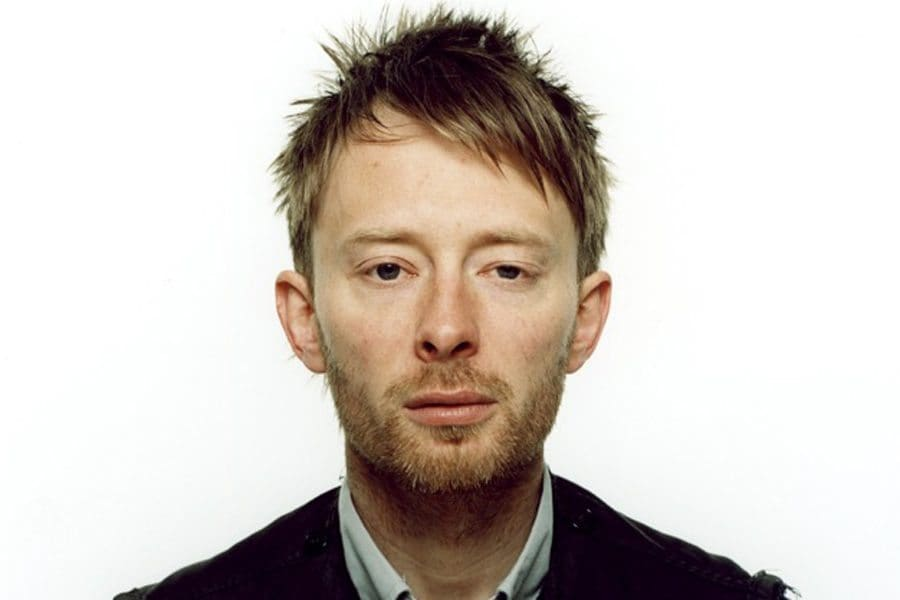
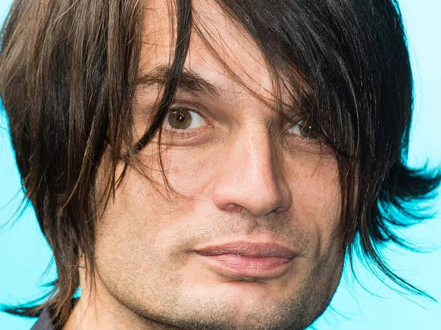
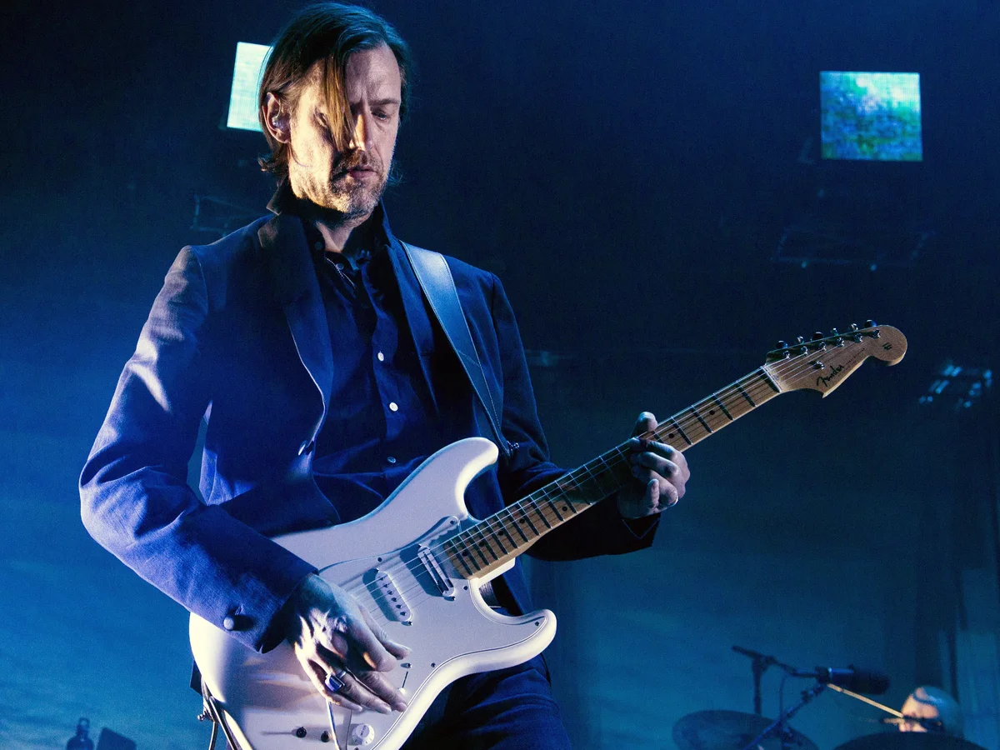
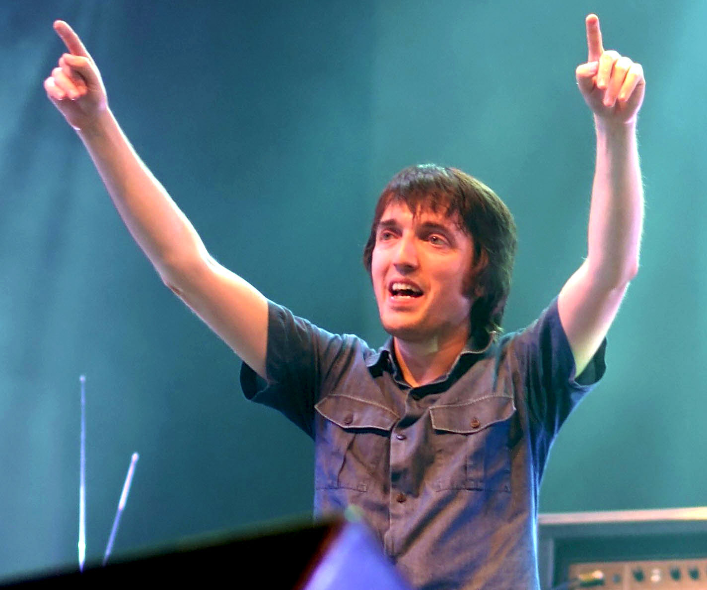
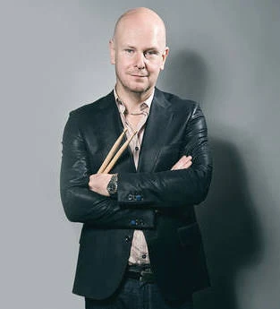

Thom Yorke
Thom Yorke is the lead singer and face of the band. He writes most of the songs along with playing rhythm guitar or piano to set the mood of each song. He’s widely regarded as one of the great singers of his time. He’s also able to write songs to make the listener think and feel raw emotion. He has also released several solo albums along with forming two other bands—Atoms For Peace and The Smile; the latter he formed with lead guitarist Jonny.

Jonny Greenwood
Jonny Greenwood serves as the band’s lead guitarist. He’s responsible for many of Radiohead’s most iconic moments, such as the guitar “scratches” on “Creep”. However, he can also set a serene scene in other ways. Originally joining the band to play keyboards, he’s an expert at making a song feel intimate if the mood calls for it. He has the ability to make a song feel powerful and energetic or soft and melancholy. He’s composed orchestral pieces for movies, and he formed The Smile with Thom Yorke.

Ed O'Brien
To round out the guitar players, we have Ed O’Brien. He likely plays guitar the most out of all of the members. He’s an expert at building a beautiful sounding atmosphere with just a guitar and some effects. He also sings backing vocals at the band’s concerts. He recently released a solo album under the name EOB titled Earth.

Colin Greenwood
Colin Greenwood, older brother of Jonny, plays bass for the band. He plays the bass in nearly every song, although he hops on keyboard for some of their more experimental songs. His bass playing sets the tone of the songs and keeps each track moving.

Phil Selway
Phil Selway plays the drums. He’s an expert at what he does. His impressive skills can be heard in songs such as “The Bends” and “Blow Out”. He’s released some solo albums, and he occasionally sings backing vocals at shows.